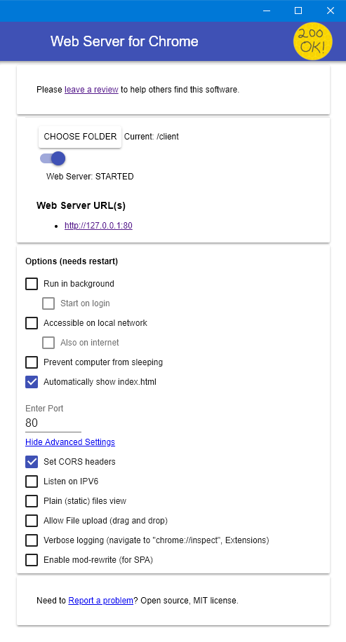

Ninja Chat
Introductie
Met de combinatie van HTML, CSS en JavaScript kun je van alles maken. JavaScript kun je in de webbrowser gebruiken, maar ook op de webserver. Een voorbeeld daarvan is een chatprogramma en dat is precies wat we met deze instructie gaan maken.
Een chatprogramma is meestal een combinatie van twee programma's. Eén programma draait op je eigen computer of telefoon en
die van je vrienden en vriendinnen. Dit wordt meestal de client genoemd. Het andere deel draait op een centrale computer en wordt
meestal de server genoemd. Een server is een centrale computer meestal ergens op internet.
WhatsApp werkt ook op deze manier. Je hebt de WhatsApp app (client) op je telefoon staan en die communiceert met de WhatsApp app op de telefoon
van je vriend via de server van WhatsApp.

Met deze instructie ga je het chatprogramma voor op jouw computer, de client, maken. De Champion en/of mentoren zorgen voor een computer met daarop de server van het chatprogramma.
Het volledig zelf maken van een chat client is niet eenvoudig. We bieden daarom 2 niveaus aan waarop je met de chat client bezig kunt zijn:
- gemakkelijk: hierbij krijg je van ons een HTML-bestand waarin al een simpele werkende client staat en waar je zelf kunt werken aan het uiterlijk met HTML en CSS.
- moeilijk: hierbij krijg je alleen instructies en moet je zelf alles maken en vormgeven.
Voor moelijk moet je vanuit niets beginnen. Dus denk even na met welk niveau je aan de slag wil gaan.
LET OP: de regels in de voorbeeldcode die beginnen met --
en groen gekleurd zijn, worden niet uitgevoerd,
maar zijn commentaar in de code. Het commentaar is bedoeld om aan te geven wat de code zou moeten doen.
Je hoeft commentaar niet in te typen om het programma te laten werken.
De rode tekst in de code, vervangt de blauwe code in de regel ervoor. De donkergele tekst is code die al bestond en die je moet laten staan.
Benodigdheden
Om met de instructies aan de slag te gaan, heb je de volgende dingen nodig:
- deze instructie: https://coderdojonijmegen.github.io/ninja-chat/
- voor het niveau gemakkelijk: HTML-, CSS- en JavaScript-bestanden voor de chat client. Dat bestand kun hier downloaden: https://github.com/coderdojonijmegen/ninja-chat/raw/master/src/client/ Zorg ervoor dat je deze 3 bestanden opslaat in een map met de naam 'client'.
- een goede teksteditor om de HTML-pagina aan te passen. Een voorbeeld is: Notepad++ of Sublime Text
- een webserver op je computer om het HTML-bestand voor de chat client te kunnen bekijken in je webbrowser. Het makkelijkst is om een plugin
voor Google Chrome te installeren:
https://chrome.google.com/webstore/detail/web-server-for-chrome/ofhbbkphhbklhfoeikjpcbhemlocgigb. Na installatie moet je de plugin instellen
zoals in het volgende plaatje:

Vergeet niet om op 'CHOOSE FOLDER' te klikken en de map 'client' te kiezen.
Tenslotte heb je een chat server nodig, maar daarvoor zorgen de mentoren. Vraag hen naar het adres van de server en zet het in het HTML-bestand voor de chat client:
--- vervang <server-ip> door het adres
--- dat je van de mentoren hebt gekregen
--- (183.20.104.3 is een voorbeeld)
var serverIpAdresEnPoort = "<server-ip>";
var serverIpAdresEnPoort = "183.20.104.3";
Stappen
Voordat je zelf aan de slag gaat, kun je eens kijken hoe het er uit kan zien. Open daarvoor een web browser en ga naar het adres van de chat server.
Makkelijk
Stap 0: lokale webserver met startcode opzetten
Voordat we beginnen, moeten we eerst de voorbereidingen doen om aan de chat client te kunnen werken:
- Maak een map
Documenten\ninja-chat-client - Download het HTML-, CSS- en JavaScript-bestand van
https://github.com/coderdojonijmegen/ninja-chat/raw/master/src/client/ en plaats ze in
Documenten\ninja-chat-client - Open de Web Server for Chrome en kies de map
Documenten\ninja-chat-client. Start de webserver - Open
Documenten\ninja-chat-client\index.htmlmet je editor. - Vervang
<server-ip>door het adres dat de mentoren je hebben gegeven. - Open je web browser en navigeer naar http://localhost. Je zou een grijs vlak met een witte balk bovenin moeten zien.
Tips voordat je begint met de code
- In
Documenten\ninja-chat-client\basic-chat.jsis al een stukje programma in JavaScript geschreven. Je kunt dat bestand bekijken, maar daarin hoef je niets aan te passen. - Je gaat vandaag als eerste aan de slag met HTML. De HTML hoort in
Documenten\ninja-chat-client\index.html. - Kies zelf in welke volgorde je de stukjes HTML zet, zodat de pagina er helemaal uit ziet zoals jij wilt!
- In HTML gebruik je tags. Dat zijn de dingen die tussen
<en>staan. - Voeg teksten toe om alles duidelijker te maken. In HTML kun je gewoon tekst typen en dat komt dan op de pagina!
- Gebruik <br> om het volgende blokje op een nieuwe regel te zetten.
- Als je klaar bent met de HTML, dan kun je die mooier maken met CSS. Je kunt bijvoorbeeld het lettertype of de kleur veranderen. De CSS hoort in
Documenten\ninja-chat-client\basic-chat.css. - CSS wordt geschreven in het Engels. Alle namen voor kleuren enzovoort zijn dus in het Engels.
Klaar om aan de slag te gaan!
Stap 1: berichtjes ontvangen van de chat server
Open Documenten\ninja-chat-client\index.html in Notepad++ of Sublime Text.
Voeg de volgende rode code toe:
<div class="container">
<!-- Zet je code hier neer -->
<div class="berichten"></div>
<!-- Einde eigen code -->
</div>
Laad de pagina opnieuw en zie dat je een welkomstberichtje krijgt van de chat server!
Als anderen berichtjes sturen, dan zie je ze ook op je eigen chat client verschijnen.
Stap 2: zelf berichtjes schrijven
Het is leuk om te zien dat anderen berichtjes sturen, maar het is natuurijk nog veel leuker om zelf berichtjes te sturen!
Je kunt berichtjes sturen door in Documenten\ninja-chat-client\index.html een blokje toe te voegen waar je wat in kunt typen.
Voeg de volgende rode code toe:
<div class="container">
<!-- Zet je code hier neer -->
<div class="berichten"></div>
Schrijf bericht: <input id="berichtInput">
<!-- Einde eigen code -->
</div>
Als je nu de pagina opnieuw laadt, kun je berichtjes schrijven. Het blokje waarin je kunt typen staat
nu onder de berichtjes.
Maar je kunt het er ook boven zetten. Doe dat eens.
Wat vind je fijner?
Stap 3: naam instellen
Als je op dit moment chat, bepaalt de server hoe je heet, bijvoorbeeld 'anon3'. Zelf een naam instellen is natuurlijk leuker. Voeg in Documenten\ninja-chat-client\index.html de volgende rode HTML toe:
<div class="container">
<!-- Zet je code hier neer -->
<div class="berichten"></div>
Naam: <input id="naamInput">
Schrijf bericht: <input id="berichtInput">
<!-- Einde eigen code -->
</div>
Laad de pagina opnieuw. Typ je naam in het vakje, en typ daarna een bericht.
Stap 4: kanaal instellen
Tot nu toe is er maar ėėn chatkanaal. Om een ander kanaal te kiezen, voeg in Documenten\ninja-chat-client\index.html de volgende rode HTML toe:
<div class="container">
<!-- Zet je code hier neer -->
<div class="berichten"></div>
<input id="kanaalInput" type="number">
Naam: <input id="naamInput">
Schrijf bericht: <input id="berichtInput">
<!-- Einde eigen code -->
</div>
Laad de pagina opnieuw. Typ een ander kanaalnummer in het vakje, en typ een bericht. Wat gebeurt er?
Stap 5: deelnemers zien
Je kunt nu van kanaal wisselen, maar hoe weet je met wie je praat? Om te zien welke deelnemers een kanaal heeft, voeg in Documenten\ninja-chat-client\index.html de volgende rode HTML toe:
<div class="container">
<!-- Zet je code hier neer -->
<div class="berichten"></div>
<input id="kanaalInput" type="number">
<button class="bekijkDeelnemers">Toon deelnemers</button>
<div class="deelnemers"></div>
Naam: <input id="naamInput">
Schrijf bericht: <input id="berichtInput">
<!-- Einde eigen code -->
</div>
Laad de pagina opnieuw. Klik op de knop. Wat gebeurt er?
- Moet de
<div class="deelnemers">persé volgen op de<button>? Wat gebeurt er als je er iets tussen zet? - Kunnen de blokjes die je tot nu toe hebt toegevoegd in een andere volgorde staan? Wat vind je belangrijk om bovenaan te hebben?
Stap 6: berichten mooier maken
Je bent nu klaar met de HTML. Je hebt alle bouwblokken die je nodig hebt om te chatten! Nu is het tijd om alles er wat leuker uit te laten zien.
Open Documenten\ninja-chat-client\basic-chat.css. Voeg onderaan het bestand het volgende toe:
/* Zet hier je eigen CSS regels neer */
.berichten {
background-color: green;
padding: 5px;
border: 2px dotted yellow;
}
Laad de pagina opnieuw. Wat is er nu anders?
- Zet ook eens een andere kleur achter
background-color:. - Wat gebeurt er als je
20pxachterpadding:zet? - Wat gebeurt er als je
dottedverandert indashed?
Stap 7: berichtInput mooier maken
Voeg onderaan in Documenten\ninja-chat-client\basic-chat.css. de volgende rode CSS toe:
/* Zet hier je eigen CSS regels neer */.berichten {
background-color: green;
padding: 5px;
border: 2px dotted yellow;
}
#berichtInput {
background-color: yellow;
color: blue;
}
Laad de pagina opnieuw.
Vind je geel en blauw niet mooi? Probeer dan eens andere kleuren!
Stap 8: naamInput mooier maken
Voeg onderaan in Documenten\ninja-chat-client\basic-chat.css. de volgende rode CSS toe:
/* Zet hier je eigen CSS regels neer */.berichten {
background-color: green;
padding: 5px;
border: 2px dotted yellow;
}
#berichtInput {
background-color: yellow;
color: blue;
}
#naamInput {
background-color: black;
color: white;
font-weight: bold;
}
Laad de pagina opnieuw.
Wat gebeurt er als je bold verandert in lighter?
Stap 9: kanaalInput mooier maken
Voeg onderaan in Documenten\ninja-chat-client\basic-chat.css. de volgende rode CSS toe:
/* Zet hier je eigen CSS regels neer */.berichten {
background-color: green;
padding: 5px;
border: 2px dotted yellow;
}
#berichtInput {
background-color: yellow;
color: blue;
}
#naamInput {
background-color: black;
color: white;
font-weight: bold;
}
#kanaalInput {
}
Geef de kanaalInput een paarse achtergrond. Het Engelse woord voor paars in 'purple'.
Laad de pagina opnieuw om de achtergrond te zien.
Vind je het lastig? Je kunt bij de vorige voorbeelden afkijken wat je moet doen.
Stap 10: de losse berichten mooier maken
Voeg onderaan in Documenten\ninja-chat-client\basic-chat.css. de volgende rode CSS toe:
/* Zet hier je eigen CSS regels neer */.berichten {
background-color: green;
padding: 5px;
border: 2px dotted yellow;
}
#berichtInput {
background-color: yellow;
color: blue;
}
#naamInput {
background-color: black;
color: white;
font-weight: bold;
}
#kanaalInput {
// Jouw CSS.
}
.bericht {
background-color: #86FFAC;
border: 1px solid #6FE8B6;
border-radius: 5px;
padding: 5px;
}
Laad de pagina opnieuw.
Door border-radius: 5px krijgt de rand mooie ronde hoekjes.
#86FFAC en ##6FE8B6 zijn HEX-codes. Daarmee kun je alle kleuren maken die je wil. Zoek zelf eens een mooie kleur uit op https://color.adobe.com/nl/ en plak daarvan de HEX in je CSS. Laad de pagina opnieuw om het resultaat te zien.
Stap 11: je eigen berichten meer laten opvallen
Nu zien alle berichten er hetzelfde uit. Je kunt je eigen berichten meer laten opvallen door onderaan in Documenten\ninja-chat-client\basic-chat.css. de volgende rode CSS toe te voegen:
/* Zet hier je eigen CSS regels neer */.berichten {
background-color: green;
padding: 5px;
border: 2px dotted yellow;
}
#berichtInput {
background-color: yellow;
color: blue;
}
#naamInput {
background-color: black;
color: white;
font-weight: bold;
}
#kanaalInput {
// Jouw CSS.
}
.bericht {
background-color: #86FFAC;
border: 1px solid #6FE8B6;
border-radius: 5px;
padding: 5px;
}
.eigen {
background-color: #A4FF7A;
border: 1px solid #6FE872;
}
Laad de pagina opnieuw.
Net als bij de vorige stap kun je weer je eigen kleuren uitkiezen op https://color.adobe.com/nl/. Laad de pagina opnieuw om het resultaat te zien.
Stap 12: Schermindeling
De onderdelen beginnen er al mooi uit te zien, maar om het er echt als app uit te laten zien, is het handig om een schermindeling te maken. Laten we de HTML opnieuw indelen, met een header, footer en de berichten komen in main. Een header is een blok bovenin je scherm, een footer is een blok onderin je scherm, de main is het belangrijkste deel en neemt de meeste plek in beslag. Daarom is main ideaal om de berichten in te laten verschijnen. Verwijder de HTML die je in de eerdere stappen hebt toegevoegd en zet dit er voor in de plaats:
<div class="container">
<!-- Zet je code hier neer -->
<header>
<input id="kanaalInput" type="number">
</header>
<main class="berichten"></main>
<footer>
Naam: <input id="naamInput">
<br>
Schrijf bericht: <input id="berichtInput">
</footer>
<!-- Einde eigen code -->
</div>
Laad de pagina opnieuw. Wat is er nu anders?
- Kunnen de blokjes die in
headerstaan ook in defooterstaan? En andersom? - Wat gebeurt er als je deze blokjes in de main zet?
- Wat doet
<br>? Wat verandert er als deze weg is?
Klaar?
Als je klaar bent met alle 12 stappen, dan kun je zelf de chat nog mooier maken met CSS. Probeer de kleuren maar eens te veranderen, of een rand om de hele chat toe te voegen. Heb je nog meer ideeën nodig? Vraag ernaar bij een van de mentoren!Moeilijk
Als al het bovenstaande te makkelijk is voor je, kunt je ook zelf een chat client maken. Je krijgt dan
een paar hints en een beschrijving van hoe de client met de server praat en dat is het dan.
De rest is aan jou!
Tip
Hoewel het natuurlijk de bedoeling is om zelf je chat client te maken, kun je natuurlijk af en toe even spieken in de HTML, JavaScript en CSS bestanden die bij makkelijk zijn gebruikt.
Voorbereidingen
Maak allereerst een map op je computer waarin je je HTML, JavaScript en CSS bestanden wilt zetten.
Bijvoorbeeld Documenten\moeilijke-ninja-chat-client\
Zorg dat de Web Server for Chrome ingesteld staat dat het bestanden uit je map serveert. Zie hoofdstukje
benodigdheden om te zien hoe je dat ook al weer moest doen.
Maak nu een HTML bestand aan in je nieuwe map met de naam index.html en
zet het volgende er in als startpunt:
<html>
<body>
<script src="https://cdnjs.cloudflare.com/ajax/libs/jquery/3.3.1/jquery.min.js"></script>
<script src="https://cdnjs.cloudflare.com/ajax/libs/socket.io/2.1.1/socket.io.js"></script>
<script src="chat.js"></script>
</body>
</html>
Binnen het simpele HTML raamwerk beginnen we met het laden van de JavaScript bibliotheken die we vanaf het internet laden. De JQuery en Socket.io bibliotheken.
Het is een goede gewoonte om je JavaScript niet tussen de HTML te zetten, maar in een eigen bestand.
Dus maak naast het HTML bestand een bestand chat.js aan. Daarin
kun je de volgende code zetten als allereerste start:
var socket = io(<server-ip-en-poort>, { forceNew: true });
Vervang <server-ip-en-poort> door het IP adres en eventueel de poort zoals je die van de
mentoren hebt gekregen. Daarmee zet Socket.IO zijn verbinding op.
Met behulp van het socket object kun je berichtjes sturen naar de server en ze ontvangen.
Je hebt daarvoor twee commando's nodig:
var socket = io(<server-ip-en-poort>, { forceNew: true });
socket.emit(<commando>, <parameter>);
socket.on(<commando>, <parameter>);
Commando's
De gebruikte commando's moeten overeenkomen met wat er op de chat server is geïmplementeerd. De
parameter bevat dan de infromatie van het berichtje dat je verstuurd of ontvangt.
Onze chat server heeft de volgende commando's geïmplementeerd:
- zetNaam: stuurt de naam van de gebruiker van de chat client naar de server. De parameter bevat dan de naam.
- maakBericht: stuurt het berichtje naar de server. De parameter bevat het berichtje.
- zetKanaal: stuurt het te gebruiken chat kanaal naar de server. De parameter bevat het kanaal nummer.
- vraagDeelnemers: vraagt de server om terug te geven welke gebruikers er op dit kanaal aanwezig zijn. Deze commando heeft geen parameters, de server weet al op welk kanaal je zit.
- krijgNaam: luister naar de server dat de naam van de gebruiker stuurt zoals deze door de server wordt bepaald. Hier komen namen als anon3 vandaan.
- krijgBericht: luister naar berichtjes van alle andere gebruikers op hetzelfde kanaal.
- krijgKanaal: luister naar de server dat het te gebruiken kanaal stuurt.
- krijgDeelnemers: luister naar server berichten als er iemand op het kanaal erbij komt of weg gaat, of als er via vraagDeelnemers om gevraagd is. Deze commando geeft een lijst van alle deelnemers in het kanaal.
Conclusie
Deze CoderDojo heb je geleerd hoe je een chat client kunt maken met JavaScript, HTML en CSS. Als je ook de moeilijke stappen hebt afgerond, ben je al ver gevorderd.
Je hebt nu alleen de chat client gemaakt. Als je ook wilt weten hoe de chat server werkt, kijk dan in hoofdstukje vervolg voor meer informatie.
Vervolg
Wil je je verder verdiepen in de gebruikte technieken? Dan kun je meer informatie vinden op de volgende sites:
- Ninja chat server code: https://github.com/coderdojonijmegen/ninja-chat/tree/master/src/server
- De Ninja chat client en server communiceren met elkaar via een websocket verbinding en gebruiken daarvoor https://socket.io/docs/ (Engelstalig)
- Voor het tonen van de berichtjes is JQuery gebruikt: https://api.jquery.com/ (Engelstalig)

Dit werk is gelicenseerd met een Creative Commons Attribution-NonCommercial-ShareAlike 4.0 International License.